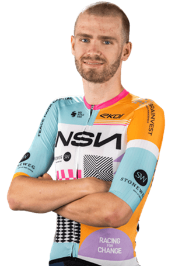

Moritz Kretschy
Datos personales
- Moritz Kretschy
- 12 de mayo de 2002
- Alemania
- NSN CYCLING TEAM
- Dorsal 115

Datos equipos
- NSN Cycling Team (2025 - Presente)
- Israel - Premier Tech Academy / Development Team (2023 - 2024)
- Rad-net Rose Team (2021 - 2022)
Temporada 2025
| Concepto | Dato / Resultado |
|---|---|
| Podios (Tour de Taiwán) | 2º puesto |
| Victorias (Alpes Isère) | 2 etapas |
| Cto. Alemania CRI | Élite |
| Sibiu Cycling Tour | Alta montaña |
| Contrato Pro | NSN (2026) |
Multimedia
Equipo NSN Cycling Team en la Vuelta Ciclista a España 2026.